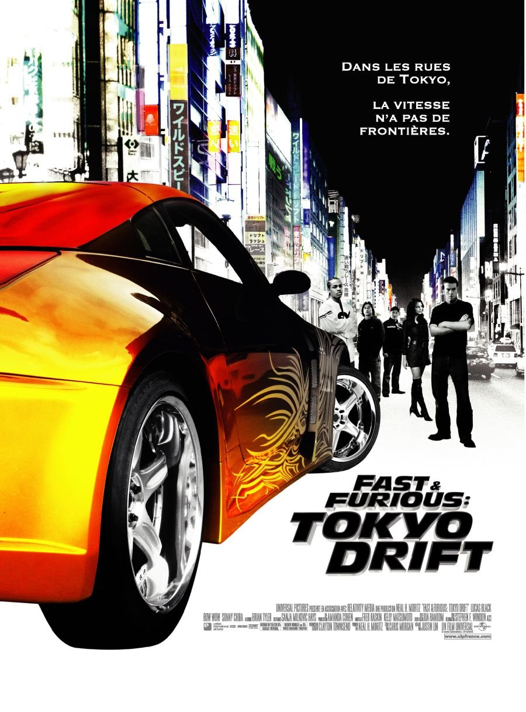
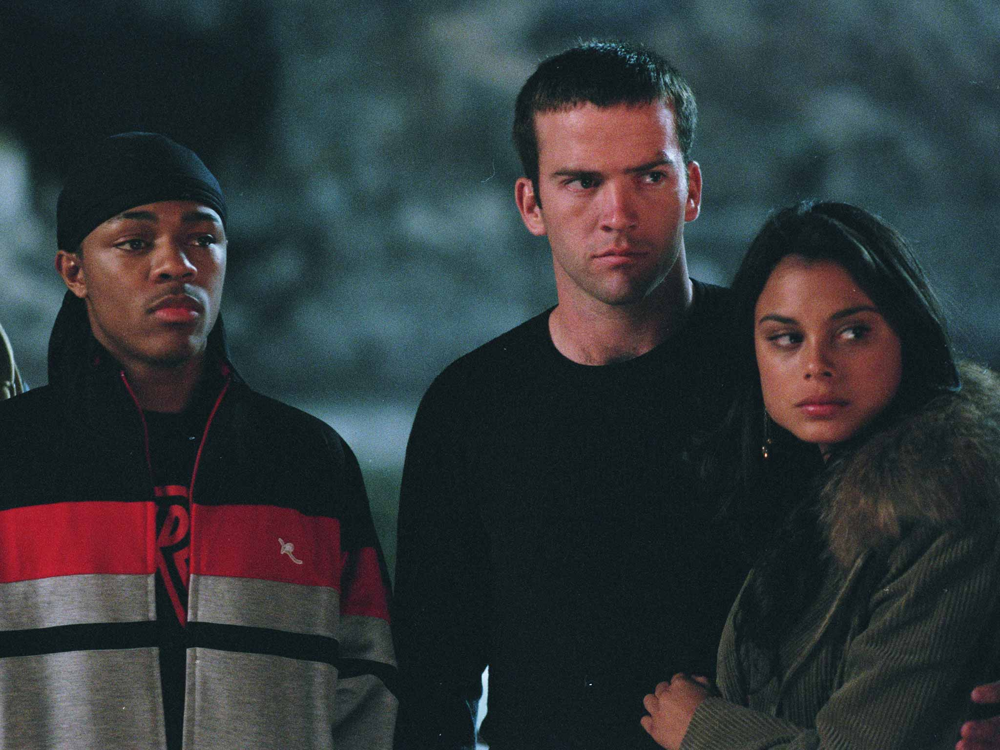
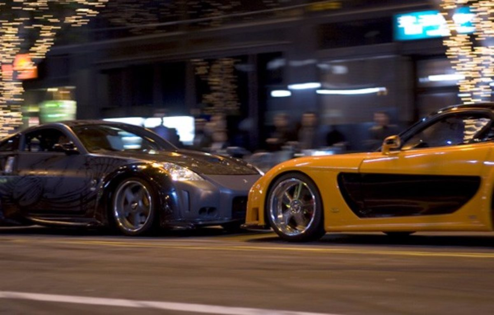
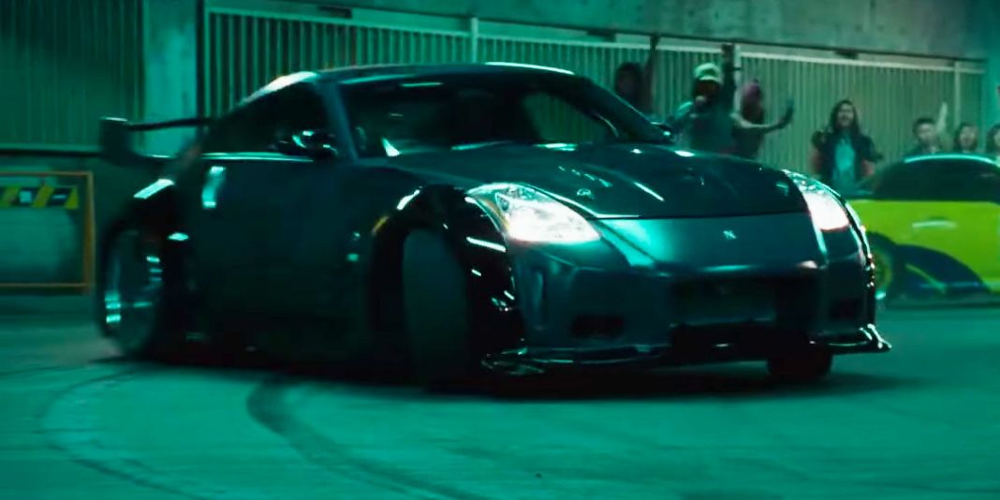
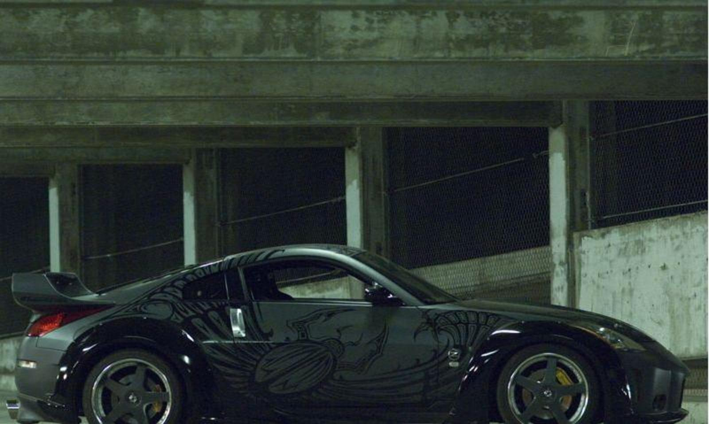

As a car lover, my favorite movie of all time is The Fast and The Furious: Tokyo Drift. The movie directed by Justin Lin. It is the third movie in the Fast and Furious series. It was released in the United States on June 16, 2006. The film received mixed reviews with praise for its driving sequences, but criticism for its screenplay and acting performances. Tokyo Drift grossed $159 million worldwide, making it the lowest-grossing film in the franchise.
The movie is about a high school car enthusiast Sean who has been sent to Japan getting invloved with a group of Japanese underground street racers and how he eventually finds his redemption.
 Troubled high school student Sean Boswell and athlete Clay race their cars, a 1971 Chevrolet Monte Carlo, and a 2003 Dodge Viper. Sean cuts through a structure and catches up to Clay. Desperate to win, Clay hits Sean's car repeatedly until they reach a high-speed turn, which causes both cars to crash; Clay's Viper hits a cement pipe, and Sean's Monte Carlo rolls. Clay and his wealthy family help him escape punishment, but because Sean is a repeat offender and in order to avoid jail, he is sent to live in Japan with his father, a U.S. Navy officer stationed in Tokyo. In Tokyo, Sean befriends Twinkie, a military brat who introduces him to the world of drift racing. After driving to an underground car show in Twinkie's 2005 Hulk-themed Volkswagen Touran, Sean has a confrontation with Takashi—the Drift King (DK) who drives a 2003 Nissan 350Z—over Sean talking to Takashi's girlfriend, Neela. Though barred from driving, Sean decides to race against Takashi, who has ties to the Yakuza, in a 2001 Nissan Silvia S15 Spec-S loaned by a racer named Han, but loses his first race with Takashi due to his unfamiliarity with drifting. To repay his debt for the car he destroyed, Sean agrees to work for Han, who drives a 1997 Veilside Fortune Mazda RX-7. They become friends, and Han offers to teach Sean how to drift, explaining that he is helping Sean as he is the only person willing to stand up to Takashi. Sean soon masters drifting by practicing in a 2006 Mitsubishi Lancer Evolution IX, gaining respect after defeating DK's right-hand man, Morimoto. Sean soon asks Neela out on a date, and learns that after her mother died, she moved in with Takashi's grandmother, which resulted in their relationship. An enraged Takashi beats Sean up the next day, telling him to stay away from Neela; Neela subsequently leaves Takashi and moves in with Sean and Han. Takashi's uncle Kamata, the head of the Yakuza, reprimands Takashi for allowing Han to steal from him. Takashi and Morimoto confront Han, Sean, and Neela about the thefts. Twinkie causes a distraction, allowing Han, Sean, and Neela to flee, who are then pursued by Takashi and Morimoto. During the chase, Morimoto crashes, leaving Takashi to pursue the trio on his own. Han allows Sean to overtake him in order to hold Takashi off, but the chase ends when Sean and Neela crash. Meanwhile, moments after escaping from Takashi, Han's car is broadsided and the car explodes before Sean has a chance to save Han. Takashi, Sean, and his father become involved in an armed standoff which is resolved by Neela agreeing to leave with Takashi. Sean's father prepares to send him back but Sean pleads him to let him fix his own mess. His father agrees and they make amends. Twinkie gives his money to Sean to replace the money Han stole from Takashi, which Sean then returns to Kamata. Sean proposes a race against Takashi, with the loser having to leave Tokyo. Kamata agrees to the challenge, but on the condition that the race take place on a mountain, revealed to be the mountain where Takashi himself is the only person to make it down successfully. Sean and Han's crew restore a 1967 Ford Mustang Fastback that Sean's father was working on to drift specification, using several components of the previously wrecked Silvia, including the engine. That night, on the mountain, crowds gather to see the race; Takashi takes the lead initially, but Sean's training allows him to catch up. Determined to win, Takashi resorts to ramming Sean's car, eventually missing and driving off the mountain while Sean crosses the finish line, with Takashi's car almost falling on him in the process. Kamata keeps his word, and lets Sean remain in Tokyo and is now dubbed the new Drift King. Some time later, Neela, Twinkie, and Sean, now driving another Nissan Silvia S15 Spec R, are enjoying themselves in their newfound homeplace and freedom. Dominic Toretto shows up to challenge Sean in a 1970 Plymouth Road Runner, and he accepts after the American proclaims himself as Han's family.
 